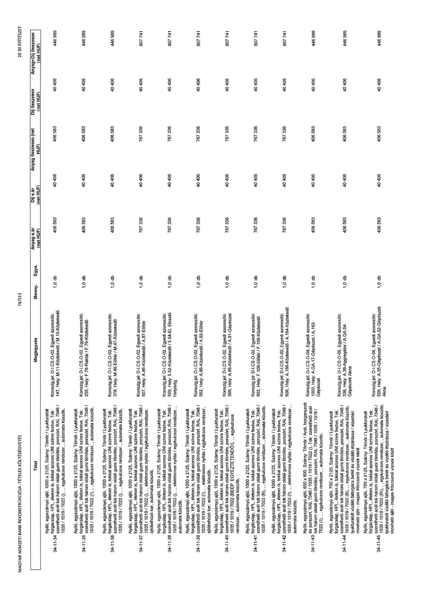

| Tétel | Megjegyzés | Menny. | Egys. | Anyag e.ár (net HUF) | Díj e.ár (net HUF) | Anyag összesen (net HUF) | Díj összesen (net HUF) | Anyag+Díj összesen (net HUF) |
|---|---|---|---|---|---|---|---|---|
| 34-11-34 Nyíló, egyszárnyú ajtó, 1000 x 2125, Szárny: Tömör / Lyukfuratolt forgácslap, HPL, éleken is, tokkal azonos UNI színre festve, Tok: szerelhető acél tok három oldali gumi tömítés, porszórt, RAL 7048 / 1035 / 1019 / 7022 (!), „ egykulcsos rendszer, „ automata küszöb, | Konszig.jel: D-I.CS-O-02, Egyedi azonosító: 147, Hely: M.11-Közlekedő / M.10-Közlekedő | 1,0 | db | 406 583 | 40 406 | 406 583 | 40 406 | 446 989 |
| 34-11-35 Nyíló, egyszárnyú ajtó, 1000 x 2125, Szárny: Tömör / Lyukfuratolt forgácslap, HPL, éleken is, tokkal azonos UNI színre festve, Tok: szerelhető acél tok három oldali gumi tömítés, porszórt, RAL 7048 / 1035 / 1019 / 7022 (!), „ egykulcsos rendszer, „ automata küszöb, | Konszig.jel: D-I.CS-O-02, Egyedi azonosító: 255, Hely: F.78-Raktár / F.76-Közlekedő | 1,0 | db | 406 583 | 40 406 | 406 583 | 40 406 | 446 989 |
| 34-11-36 Nyíló, egyszárnyú ajtó, 1000 x 2125, Szárny: Tömör / Lyukfuratolt forgácslap, HPL, éleken is, tokkal azonos UNI színre festve, Tok: szerelhető acél tok három oldali gumi tömítés, porszórt, RAL 7048 / 1035 / 1019 / 7022 (!), „ egykulcsos rendszer, „ automata küszöb, | Konszig.jel: D-I.CS-O-02, Egyedi azonosító: 378, Hely: M.46-Előtér / M.47-Közlekedő | 1,0 | db | 406 583 | 40 406 | 406 583 | 40 406 | 446 989 |
| 34-11-37 Nyíló, egyszárnyú ajtó, 1000 x 2125, Szárny: Tömör / Lyukfuratolt forgácslap, HPL, éleken is, tokkal azonos UNI színre festve, Tok: szerelhető acél tok három oldali gumi tömítés, porszórt, RAL 7048 / 1035 / 1019 / 7022 (!), „ elektromos nyitás / egykulcsos rendszer, ajtóbehúzó kar, automata küszöb, | Konszig.jel: D-I.CS-O-02, Egyedi azonosító: 507, Hely: A.86-Közlekedő / A.87-Előtér | 1,0 | db | 767 336 | 40 406 | 767 336 | 40 406 | 807 741 |
| 34-11-38 Nyíló, egyszárnyú ajtó, 1000 x 2125, Szárny: Tömör / Lyukfuratolt forgácslap, HPL, éleken is, tokkal azonos UNI színre festve, Tok: szerelhető acél tok három oldali gumi tömítés, porszórt, RAL 7048 / 1035 / 1019 / 7022 (!), „ elektromos nyitás / egykulcsos rendszer, automata küszöb, | Konszig.jel: D-I.CS-O-02, Egyedi azonosító: 559, Hely: 5.52-Közlekedő / 5.54-El. Elosztó Helyiség | 1,0 | db | 767 336 | 40 406 | 767 336 | 40 406 | 807 741 |
| 34-11-39 Nyíló, egyszárnyú ajtó, 1000 x 2125, Szárny: Tömör / Lyukfuratolt forgácslap, HPL, éleken is, tokkal azonos UNI színre festve, Tok: szerelhető acél tok három oldali gumi tömítés, porszórt, RAL 7048 / 1035 / 1019 / 7022 (!), „ elektromos nyitás / egykulcsos rendszer, ajtóbehúzó kar, automata küszöb, | Konszig.jel: D-I.CS-O-02, Egyedi azonosító: 562, Hely: A.86-Közlekedő / A.92-Előtér | 1,0 | db | 767 336 | 40 406 | 767 336 | 40 406 | 807 741 |
| 34-11-40 Nyíló, egyszárnyú ajtó, 1000 x 2125, Szárny: Tömör / Lyukfuratolt forgácslap, HPL, éleken is, tokkal azonos UNI színre festve, Tok: szerelhető acél tok három oldali gumi tömítés, porszórt, RAL 7048 / 1035 / 1019 / 7022 (B), „ BEÉP. EGYEZTETENDŐ!), „ egykulcsos rendszer, „ automata küszöb, | Konszig.jel: D-I.CS-O-02, Egyedi azonosító: 569, Hely: A.86-Közlekedő / A.91-Gépészet | 1,0 | db | 767 336 | 40 406 | 767 336 | 40 406 | 807 741 |
| 34-11-41 Nyíló, egyszárnyú ajtó, 1000 x 2125, Szárny: Tömör / Lyukfuratolt forgácslap, HPL, éleken is, tokkal azonos UNI színre festve, Tok: szerelhető acél tok három oldali gumi tömítés, porszórt, RAL 7048 / 1035 / 1019 / 7022 (B), „ egykulcsos rendszer, „ automata küszöb, | Konszig.jel: D-I.CS-O-02, Egyedi azonosító: 602, Hely: F.108-Előtér / F.106-Közlekedő | 1,0 | db | 767 336 | 40 406 | 767 336 | 40 406 | 807 741 |
| 34-11-42 Nyíló, egyszárnyú ajtó, 1000 x 2125, Szárny: Tömör / Lyukfuratolt forgácslap, HPL, éleken is, tokkal azonos UNI színre festve, Tok: szerelhető acél tok három oldali gumi tömítés, porszórt, RAL 7048 / 1035 / 1019 / 7022 (!), „ elektromos nyitás / egykulcsos rendszer, „ automata küszöb, | Konszig.jel: D-I.CS-O-02, Egyedi azonosító: 608, Hely: A.186-Közlekedő / A.184-Közlekedő | 1,0 | db | 767 336 | 40 406 | 767 336 | 40 406 | 807 741 |
| 34-11-43 Nyíló, egyszárnyú ajtó, 650 x 800, Szárny: Tömör / Acél, horganyzott és porszórt, RAL 7048 / 1035 / 1019 / 7022 (!), Tok: szerelhető acél tok három oldali gumi tömítés, porszórt, RAL 7048 / 1035 / 1019 / 7022 (!), „ egykulcsos rendszer, „ automata küszöb, | Konszig.jel: D-I.CS-O-04, Egyedi azonosító: 1003, Hely: A.GA.17-Gépészet / A.163-Gépészet | 1,0 | db | 406 583 | 40 406 | 406 583 | 40 406 | 446 989 |
| 34-11-44 Nyíló, egyszárnyú ajtó, 750 x 2125, Szárny: Tömör / Lyukfuratolt forgácslap, HPL, éleken is, tokkal azonos UNI színre festve, Tok: szerelhető acél tok három oldali gumi tömítés, porszórt, RAL 7048 / 1035 / 1019 / 7022 (B), „ egykulcsos rendszer, „ automata küszöb, lyukfuratolt vízálló faforgács betét és vízálló élzárással / víztéri mosható ajtó - magas fröccsenő víznek kitett | Konszig.jel: D-I.CS-O-06, Egyedi azonosító: 336, Hely: A.39-Aggregátor / A.GA.04-Gépészeti Akna | 1,0 | db | 406 583 | 40 406 | 406 583 | 40 406 | 446 989 |
| 34-11-45 Nyíló, egyszárnyú ajtó, 750 x 2125, Szárny: Tömör / Lyukfuratolt forgácslap, HPL, éleken is, tokkal azonos UNI színre festve, Tok: szerelhető acél tok három oldali gumi tömítés, porszórt, RAL 7048 / 1035 / 1019 / 7022 (B1), „ egykulcsos rendszer, „ automata küszöb, lyukfuratolt vízálló faforgács betét és vízálló élzárással / víztéri mosható ajtó - magas fröccsenő víznek kitett | Konszig.jel: D-I.CS-O-06, Egyedi azonosító: 509, Hely: A.35-Gépészet / A.GA.02-Gépészeti Akna | 1,0 | db | 406 583 | 40 406 | 406 583 | 40 406 | 446 989 |
